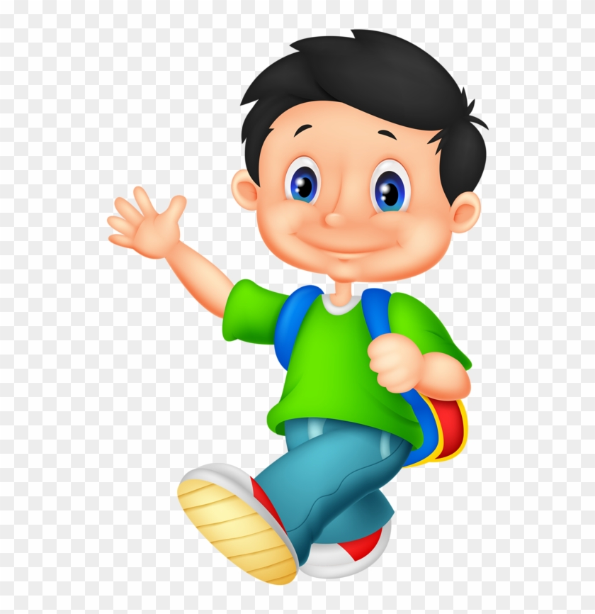

Domonic Yang
My name is Domonic Yang. I was born on June 13, 2005 in Maplewood, Minnesota and lived there for three years before moving to Eau Claire, Wisconsin. I have lived in Wisconsin until I was seventeen before moving to Hawaii. I currently live in Aiea, Hawaii. I plan on going to the University of Mānoa, currently an undecided major but I am thinking of an engineering career.
What are my hobbies and interests?
Playing sports have been an important aspect to my life. Playing sports such as Football, Soccer, Tennis, Basketball, and Volleyball have been my favorite sports to play growing up. My favorite thing to watch is Football when it is the football season. My favorite team is the Seattle Seahawks. I like to play video games in my free as well. I also like to go for walks around the city and places that I haven't been to before.

Video Game Design Project
The game is called, "Timeline to Find Words". It has a word search layout. The rules and game setup include, there will be a word that pops up and you have to find the given word before the time runs out. Once the word is found there will be another word that will show up and you have to find the word as well with a new board showing up. You will be rewarded with more points the faster you find the word. The more points you get, the harder the words are and the bigger the word search board is. When the time runs out, you will be brought to a screen that says “Time is up” and will show you your final score. If you can’t find the word in a short time, the game will give limited help/hint to find the random word in the word given by the game. The game didn't take too long to plan out and design as the game itself is pretty simple. I learned that there are a lot of things that go into making a game and many small things that can change the games perspective. I would like to change and implement a better reward system in the future.

Contact Information
School Email - 2022300207@k12.hi.us